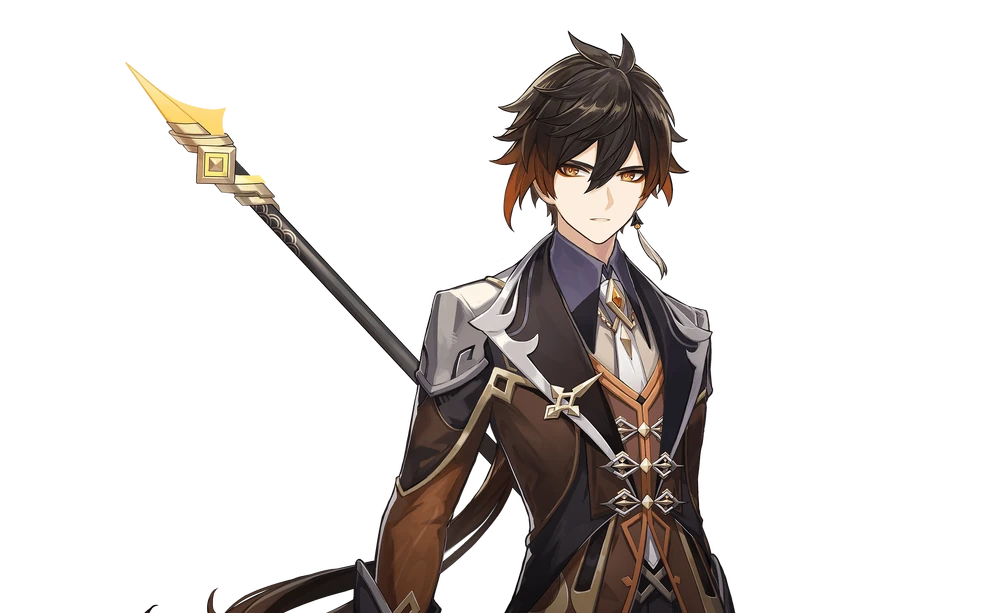
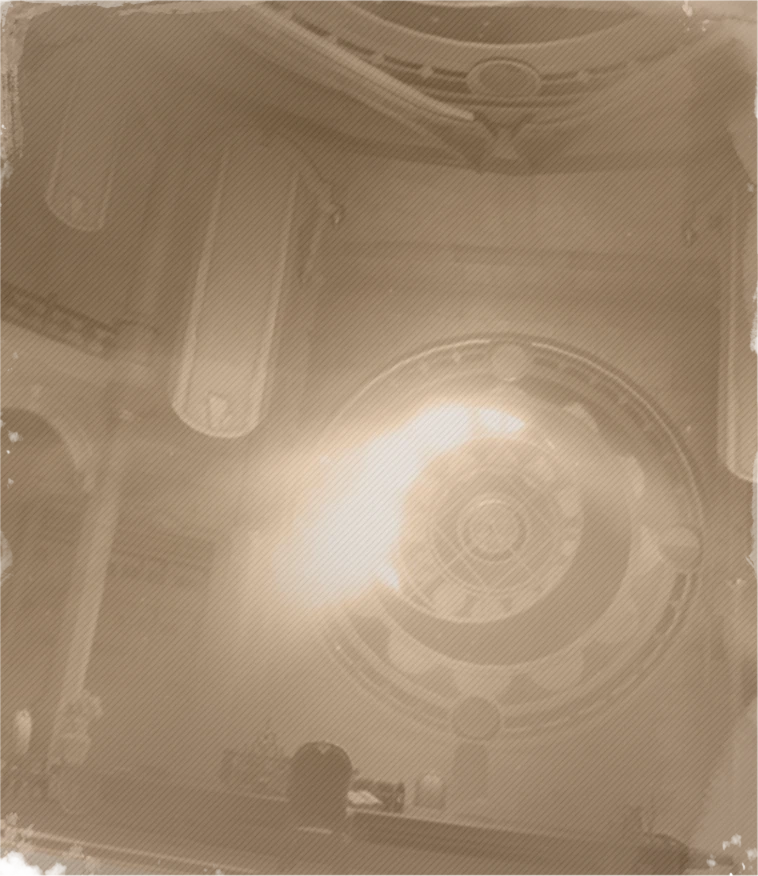
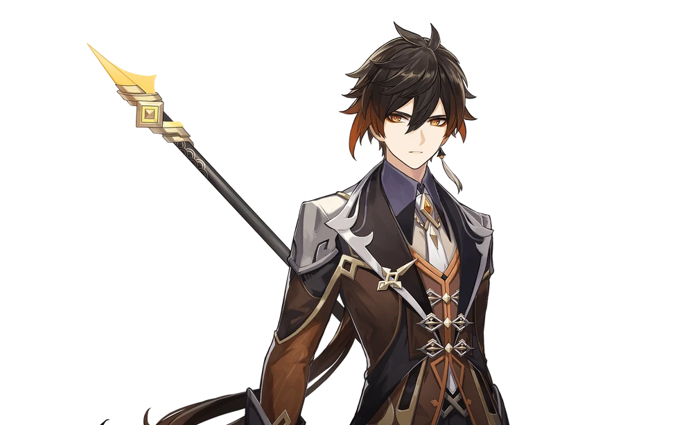
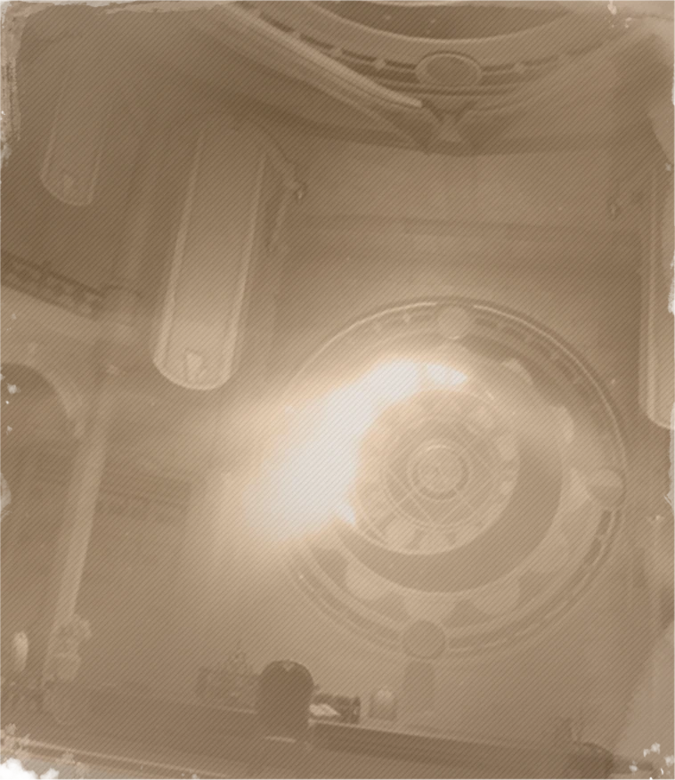

Vago Mundo
Zhongli
Wangsheng Funeral Parlor's mysterious consultant. Handsome, elegant, and surpassingly learned. Though no one knows where Zhongli is from, he is a master of courtesy and rules. From his seat at Wangsheng Funeral Parlor, he performs all manner of rituals.